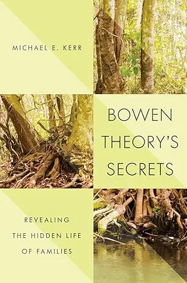
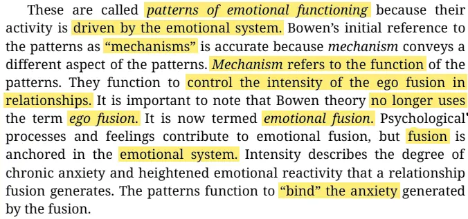
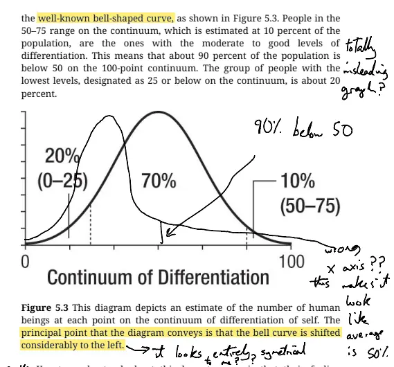

- 2025-07-17
- I’m doing a deep read of this book:

- (I’m new to Bowen’s theory, and I haven’t read any of Bowen’s writings yet. I was told that this book is the best modern thing to read to get the whole theory)
- I have scribbled at various points in Michael Kerr’s book on Bowen Family Systems theory that the pedagogy of this theory is trash
- Both Bowen’s original terms, and some of the new ones from Kerr
- I can imagine writing a post about this, and coming up with a better-formulated theory
- It’s mostly non-intuitive terms (e.g. “differentiation of self”, where self is a very loaded word that should be avoided, and every time you read it you have to translate it into what they actually mean. See also Internal Family Systems, which also uses “Self” in a way that is deeply misleading and causes constant issues)
- Also confusing and misleading redundancy - there are two separate concepts, that Michael Kerr both calls “triangles”. This is just… so fucking dumb. I’ve renamed the second to “triangulation”
- I think the problem here is the thing of “the pioneer should not also be the one to create the terms, you should find someone where cares about something like memetics, memetic fitness, pedagogy”.
- A pioneer, and a map-maker
This as a project
- I probably won’t take “trying to improve the pedagogy/memetic fitness of Bowen family systems theory” up as an active project any time soon. But maybe I’ll do it in the course of my own grokking of the theory, let’s see
- But then again, maybe I should?
- “Beginners can do things that experts cannot”
- “the story of how the most impactful tutorial I wrote in my career was just taking something that was unnecessarily obtuse and explaining it in a simpler way”
- A project of “making family systems easier to grok”?
- Because e.g., Kaj has a LessWrong series on IFS. The importance of the family seems very under-appreciated/under-talked about. Perhaps there are many people who are like how I was - deeply daunted at the prospect of attempting to “help” their family. Deciding instead to just go off and heal themselves, and still being triggered around their family (e.g., the “if you think you’re enlightened, go spend a week with your family” thing). Not to be grandiose, but maybe there’s a paradigm shift, a new movement here → family-oriented healing, rather than only personal healing…
- “Beginners can do things that experts cannot”
Quotes from the post on what beginners can do
The thing that beginners can do that experts cannot is compress knowledge.
Before my article, let’s say the path everyone had to go through to learn to write shaders was ~4 months of prerequisites. My contribution was figuring out how to do something useful WITHOUT all those prereq’s. I charted a new path.
It’s almost impossible for an expert to do this because they cannot remember what it’s like to NOT have this knowledge. It’s a very difficult thing to simulate in your mind, a lack of knowledge, perhaps impossible.
If you struggle to learn something, and then shorten that path for others, you will be, at minimum accelerating the field, and perhaps creating a new school of thought that will surface a major breakthrough.
I want to say it one more time for emphasis: you can accelerate the entire field, on day one, as a beginner. This isn’t like “give the new guy a toy problem”, this is:
“we NEED you to contribute because we literally cannot do this work up here in the ivory tower. For the love of god we need you”
What is bad?
1. “Differentiation of self” is a dreadful, misleading term
- Kerr says:
“Bowen theory’s concept of differentiation of self is the most misunderstood of the eight concepts in the theory-probably also the most important.”
- I imagine it’s the most misunderstood because it’s confusingly named
- You can be someone who is reactive, and always immediately snaps, doesn’t pause to consider more healthy options
- Or, you can be someone with more mindfulness, meta-cognition, the ability to pause, reflect on if the automatic, emotion-driven response is healthy, and rationally choose a more measured response
- This is a continuum, from “reactive, automatic, unreflective” to “reflective, measured, using the ‘intellectual system’ instead of just the ‘emotional system’ (cortex vs precortex)”
- And this is referred to as “differentiation of self” - what???
The word “Self” is laden with meaning, is already a complex and non-clear term
- “Differentiation of self”, intuitively to me, sounds like “developing your own personality/opinions”, not “the ability to be less reactive and think things through more”
- The continuum is “can you use your rational side, your intellectual system, or not”
- IMO, it should be called, idk, “cortical functioning” or something
- Internal Family Systems does the same thing: “Self” means “a state of wholeness and presence, not a part, something bigger”, but it sounds like “your true self”, like “the healthiest part” or something. It’s very personalised, evokes individuality, your true personality etc, where what it’s actually pointing to is a place of wholeness
I do get it, if I squint
- To have a more solid self = to have principles, to be grounded. And, instead of angrily snapping at someone, you may remain in the cortical, “intellectual” zone more, and choose a more measured response
- I think just the heavy echoes/connotations of “personality” when you say “self” mean you have this constant uphill battle, a constant “primary association” to fight off/unlearn. It’s very annoying!
- “Differentiation of self”
- It sounds like “developing your personality” or “becoming your own person”
- When what they’re pointing at is “become more mindful, less reaction, more rational”
2. “Triangle” is used to mean two different things
- Triangle vs triangulation (my term)
- Type 1 → “the triangle as the smallest stable relational group (that is, a group of 3 people)”
- Type 2 → triangulation, which is the process of a child being brought into the anxiety of the two parents. Only, Kerr doesn’t call this triangulation, he calls it the triangle pattern. So when he talks about triangles, it’s non-intuitive which he’s talking about.
3. It has some great diagrams, but
- It’s missing meta-diagrams, diagrams showing the whole thing
- (admittedly, I haven’t read the whole thing yet)
- Can I make these?
4. Classic non-fiction book thing of saying multiple times…
- “This is the most important thing”
- You can’t have more than one “most important thing”! Which is it??
5. Being a book
- I think there are limits to the book format (v.s. e.g. a mnemonic medium). It needs far more diagrams, it needs definitions to be pulled out and formatted much more clearly, it needs far more clarity. E.g., this bit of text is batshit and would be so much better in a different format:

- “Fusion” isn’t defined until ~40 pages later. The structure of the book is a mess.
6. Dominant-adaptive (deferential)
- Instead of “dominant-adaptive” being one of the 4 patterns of emotional function, Kerr’s term is “dominant-adaptive (deferential)” - this is just more of a mouthful, harder to remember, redundant, stupid
7. Poor ordering
- Uses terms (e.g. “fusion”) for ~60 pages before finally defining them
8. Figure 5.3 is straight up wrong
- I had to draw my own on top to confirm - I swear to god, the actual graph implies that most people are 50/100 “differentiated”, which is definitely not Kerr’s point. It’s supposed to be a graph with a long tail, but it’s drawn to look essentially symmetrical. Am I missing something??

Maybe it’s anti-memetic because they haven’t explained it well?
- From the intro to Kerr’s book
“Despite Bowen theory being based on research begun more than seventy years ago, the value of viewing human beings as profoundly emotionally driven creatures and human families functioning as emotional units has yet to significantly penetrate the public consciousness. Nor has the view of the forest as a social network penetrated the public consciousness. Both insights are secret, or at least largely hidden from view. This is obviously not the result of a conspiracy to suppress the information but, in the case of the family as an emotional unit, requires a radical and thus difficult shift in conceptual thinking. Most people acknowledge that the family is critically important to human health and well-being, but few are aware of the emotional forces and patterns of interaction in all families that govern whether the unit functions as a resource or stressor for its members”
- Maybe this is just… youthful arrogance or something, but this fundamentally seems like a marketing & education problem, right?
- I’d be curious to learn more about the spread of ideas, and various therapy schools. E.g., what made IFS “blow up” in popularity (if that’s even true - I may have been in an IFS bubble because I worked at Refract). It’d be interesting to see a graph showing the popularity of various schools of therapy over time, like Freudian dominance to presumably essentially totally dying out, CBT exploding some time after the cognitive revolution, etc
Vs Internal Family Systems
- IFS has become pretty popular
- I wonder how much of this is downstream of having a core metaphor: “you have a lil family of ‘parts’ inside of you”, which is very “sticky”/self-describing
- Vs, Bowen theory feels like much more of a mess
- The “wind” analogy from Kerr is good (see below), but somehow not as compelling or “complete”
- Is Bowen theory just more nuanced and complex, harder to distill?
- E.g., the idea of a “tree book”, vs IFS as akin to a “branch book”, that can be essentially summarised in a single sentence? (From Common Cog’s “The Three Types of Books”)
- Is Bowen theory a “hard to grok” mess intrinsically, due to complexity, or is Kerr just not a good teacher/theoretician?
”Wind” is the only standout metaphor that I can currently recall from what I’ve read so far:
- From Kerr’s book:
It’s challenging for people to shift from individual, cause-and-effect thinking to a systems view because it means letting go of that individual focus.
Scott Huler’s (2004) description of how the Beaufort wind force scale was developed illustrates this shift. He notes that the wind is invisible; you can only describe it by observing its effects on visible things like sails or trees. To describe the wind, “you do the opposite: you look at everything else. It’s mind-expanding” (p. 90).
Similarly, the flow of emotional forces within a family is invisible. You infer their presence by observing their impact on family members, a process that is profoundly mind-expanding.
Consider a young man who dislikes visiting his parents because they treat him “like a child.” He laments, “It is like I never left home.” When asked if he acts like a child, he responds, “Yes, and that is what I hate most about going home!”
From his individual perspective, he believes his parents cause him to act this way. He’s like Huler’s “waving tree,” but he doesn’t recognise the “wind” of the emotional forces he unwittingly helps create. He hasn’t considered his heightened emotional reactions to his parents’ facial expressions, tone of voice, and other nonverbal cues. It’s not just what they say, but also what they react to in his own behaviour and demeanour. Emotions are constantly flowing among all three individuals in this family system.
Other stuff to fold in
- 2025-07-18
- I just coined the term “extended emotional system”, which is more self-describing than emotional system (as what it means is, the emotional system of your family)
- The 4 patterns of… something. 4 patterns of communication? Not a memorable title at all for something so key
Feeding this page to Gemini with the following prompt, to see if there are more terms/fields that I’m not aware of, that care about this kind of stuff
- Pedagogy
- Memetics
- Semiotics
- Formal Ontology
- Nomenclature
I wrote this - is there a name for this kind of thing, the part of theory that involves making the concepts well labelled, self describing, easy to grok, etc?
I'm wondering if this is partially semiotics, as I believe that the labels they've used for certain concepts aren't good ones
You’ve raised some insightful critiques about the pedagogical quality of the terminology in Michael Kerr’s presentation of Bowen Family Systems Theory. The issues you’ve identified, such as non-intuitive terms, confusing redundancy, and poor definitions, point to a specific area of theory development that is crucial for its adoption and understanding.
The practice of creating well-labelled, self-describing, and easily understandable concepts within a theory is often discussed under several umbrellas, with pedagogy and memetics being highly relevant to your analysis.
The Role of Pedagogy and Memetics
-
Pedagogy: In a broad sense, the pedagogy of a theory concerns the methods and practices of teaching it. Your critique that the theory’s terminology is “trash” from a teaching and learning perspective is a direct commentary on its pedagogical weakness. A theory with a strong pedagogical foundation would use terms that are clear, distinct, and intuitive, facilitating comprehension rather than hindering it.
-
Memetics: You also touch upon the “memetic fitness” of the theory’s concepts. A meme, in this context, is an idea or concept that spreads from person to person. Its “fitness” is its ability to replicate successfully. Terms that are confusing or have misleading connotations, such as “differentiation of self,” have low memetic fitness because they are less likely to be understood and transmitted accurately. In contrast, a theory like Internal Family Systems (IFS) may have higher memetic fitness due to its “sticky” core metaphor of an internal family of “parts”.
Is Semiotics the Right Term?
You are correct in identifying that semiotics is a highly relevant field here. Semiotics is the study of signs and symbols and their use or interpretation. In the context of a theory, the terms chosen are signs that represent complex ideas.
Your critique aligns with semiotics in the following ways:
-
The Signifier and the Signified: In semiotics, a sign consists of the signifier (the word or symbol, e.g., “differentiation of self”) and the signified (the concept it represents, e.g., the ability to be less reactive and more rational). Your argument is that the signifier (“differentiation of self”) is a poor choice for the signified because it evokes the wrong “primary association”.
-
Arbitrary Nature of Signs: While the relationship between a signifier and its signified is often arbitrary, for a theory to be effective, the chosen signifiers should ideally not be misleading. Your frustration with Kerr’s terminology stems from the confusing and non-intuitive nature of the chosen terms.
Therefore, your analysis of Bowen theory’s terminology through the lens of how well the labels represent the concepts is indeed a semiotic critique.
In addition to pedagogy, memetics, and semiotics, other related concepts include:
-
Nomenclature: This refers to the system of names or terms used in a particular field. Your proposed renaming of “triangle” to “triangulation” for one of the concepts is an attempt to improve the nomenclature of the theory.
-
Ontology: In the context of information science, an ontology is a formal naming and definition of the types, properties, and interrelationships of the entities that exist for a particular domain of discourse. A well-defined ontology would prevent the kind of ambiguity you identified with the term “triangle”.
In essence, you are pointing to the failure of the theory’s proponents to engage in what might be called “conceptual hygiene” or “terminological best practices,” which are crucial for a theory’s dissemination and practical application. Your observation that “the pioneer should not also be the one to create the terms” is a sharp insight into the different skill sets required for discovery versus communication and teaching.
Never heard of “ontology” used in this way, exciting!
what could I read to learn about this kind of "ontology"? It sounds like it could be a useful field to know about (that is, ontology), as I'm passionate about knowledge organisation, pedagogy etc